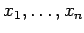
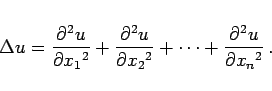

Inhalt Index DeskTop Bronstein

 Differentialgleichungen Partielle Differentialgleichungen Partielle Differentialgleichungen aus Naturwissenschaft und Technik
Differentialgleichungen Partielle Differentialgleichungen Partielle Differentialgleichungen aus Naturwissenschaft und Technik


Die Ausbreitung von Schwingungen als wellenförmige Erscheinung in einem homogenen Medium wird mit Hilfe der Wellengleichung
beschrieben, deren rechte Seite Q(x,t) verschwindet, wenn keine Störungskräfte auftreten. Das Symbol x steht für die n Variablen  des n-dimensionalen Problems. Der LAPLACE-Operator  ist dann wie folgt definiert:
ist dann wie folgt definiert:
|  | (9.102b) |
Die Lösung der Wellengleichung ist die Wellenfunktion u. Die Differentialgleichung (9.102a) ist vom hyperbolischen Typ.